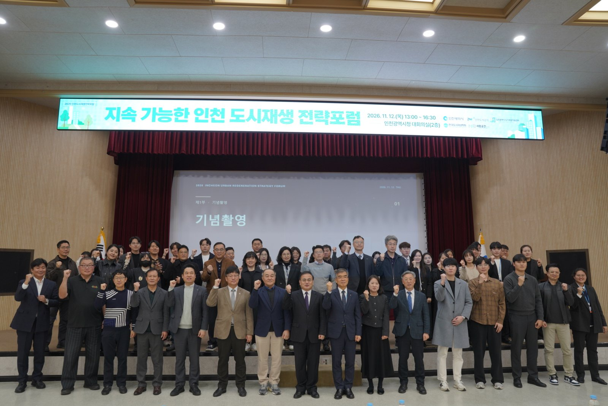
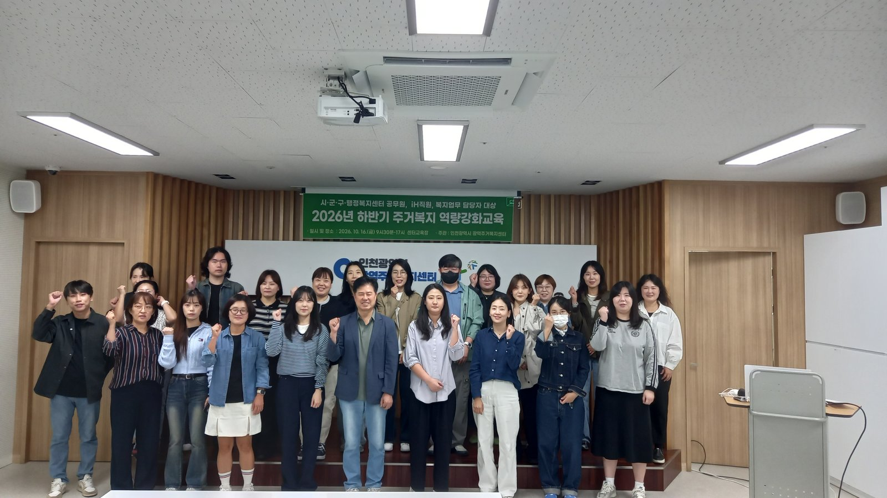
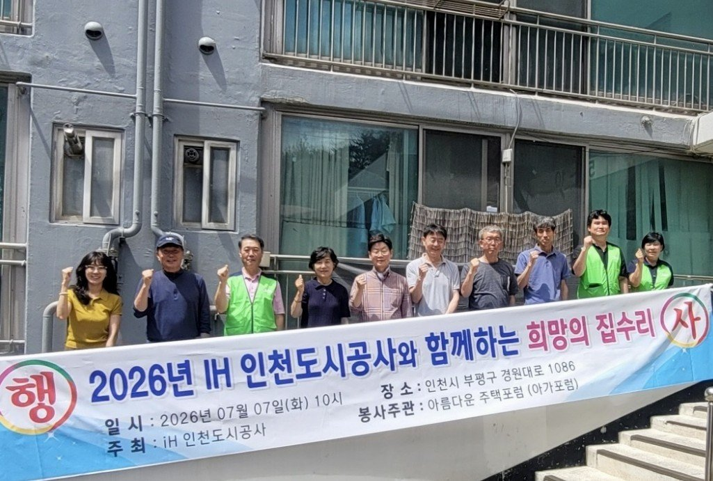

인천 도시재생지원센터 운영방식 검토 7년, iH와 다시 3년 위탁
2023년 9월 집계, 계획기간 끝난 사업지 9곳 중 완료 3곳
광역주거복지센터 주거상향 2025년 160가구 입주선정
AI경제저널=김갑봉 기자 | 「2026 인천 도시재생 전략포럼」이 11월 12일 인천시청에서 열렸다. 박형균 인천광역시 도시재생지원센터장은 계획뿐 아니라 실행과 사후관리, 자생력도 함께 고려해야 한다고 말했다. 인천시의회는 2019년부터 이 센터 운영방식을 물어 왔다. 센터는 인천도시공사(iH)가 재계약으로 2027년 말까지 맡는다.

인천시가 iH에 맡긴 두 센터
도시재생지원센터는 2018년 3월 문을 열었다. 인천시는 2024년 12월 iH와 위수탁계약을 다시 맺었다(2025~2027년). 시는 2026년 예산안에 위탁사업비 19억6733만원을 올렸다. 대행수수료는 순수 사업비의 4%다(2024년 11월).
광역주거복지센터는 2021년 2월 문을 열었고 위탁 기간은 2027년 1월까지다. iH는 2026년 7월 22일 시의회에서 14억원으로 주거향상·집수리 사업을 한다고 보고했다. 약 8억원은 iH 자체예산이다. 센터는 2026년 10월 16일 올해 주거복지 교육 17회에서 584명이 수료했다고 밝혔다.

재단·통합재단 검토와 센터장 공백
2019년 행정사무감사 지적 뒤 당시 도시재생건설국장은 2020년 2월 재단 법인화를 포함한 점검안을 6월까지 마련하겠다고 답했다. iH는 2023년 1월 재단법인과 장기 공공위탁을 비교하겠다고 보고했다. 2024년 1월에는 공사 편입과 통합재단 설립을 검토하겠다고 했다.
이인교 시의원은 2023년 11월 예산심사에서 2024년 예산안 17억4875만5000원에 세부 내용이 없다고 지적했다. 최도수 당시 도시균형국장은 iH 위탁이라 예산을 통으로 편성했다고 답했다. 시는 2025년 예산안 가운데 인건비가 9억351만7000원, 사업비가 6억7130만원이라고 설명했다(2024년 11월).
이단비 시의원은 2024년 11월 15일 행정사무감사에서 센터장 임기 문제를 짚었다. 2대와 3대 센터장 사이 공백은 9개월 20일이었다. 조동암 당시 iH 사장은 공모에서 적격자가 없었고 임기와 위수탁계약 사이에 틈이 있었다고 답했다. 그는 2024년 위탁비 약 17억5000만원 외에 iH가 약 5억7000만원을 더 냈다고 했다.
조 사장은 같은 자리에서 광역주거복지센터 기능을 함께 담을지 검토하겠다고 했다. 업무가 겹치느냐는 물음에는 조금 다르지만 시민 주거복지 향상이라는 목적은 같다고 답했다. iH는 2025년 1월 공모에서 적임자를 찾지 못해 재공모 끝에 6월 센터장을 임명했다. 시는 임기제 직원 채용이 늦어져 2025년 제3회 추경안에서 위탁사업비 2억3000만원을 깎았다.
이단비 시의원은 2025년 12월 1일 중장기 운영 전략 예산을 물었다. 장두홍 당시 도시균형국장은 2026년 예산안에 반영되지 않았다며 시 재정이 좋지 않아 전체적으로 많이 삭감됐다고 답했다. 박흥석 시의원은 2026년 7월 22일 광역주거복지센터 역할을 iH가 정할 수 있는지 물었다. 류윤기 iH 사장은 시가 위탁한 사업만 할 수 있다고 답했다.
2023년 9월 집계, 사업지 9곳 중 완료 3곳
인천연구원 윤혜영 연구위원은 『인천시 도시재생사업 사후관리 방안 연구』(2024)를 냈다. 보고서는 계획상 기간이 끝난 13곳에서 기간을 늘린 4곳을 빼고 9곳을 살폈다. 실제 사업을 마친 곳은 3곳이었다(2023년 9월). 강화군 왕의 길, 제물포구(옛 동구) 화수정원마을, 남동구 만수무강 만부마을이다.
도시재생지원센터가 2022년 조사한 거점시설 29곳 가운데 준공 시설은 7곳이었다. 7곳 중 3곳은 쓰이지 않았다. 옛 서구 상생마을 시설 2곳과 사업을 마친 만부마을 현장지원센터다. 보고서는 미운영 시설은 해당 지자체가 운영방안과 주체를 검토 중이라고 적었다.
이인교 시의원이 발의한 도시재생사업 사후관리 지원 조례가 2025년 3월 제정됐다. 유광조 도시균형국장은 2026년 7월 16일 사후관리 지원 4곳을 2026년 예산에 편성했다고 보고했다. 그는 사업을 마친 곳의 운영 상태를 묻는 박흥석 시의원에게 뒤처리가 다소 미흡하다고 답했다. 그는 조례에 따라 지원 요청을 심의하고 있다며 구·시 합동 점검을 추진하겠다고 했다.
주거상향 2025년 160가구 입주선정
주거상향 지원사업은 쪽방·고시원·반지하 거주자의 공공임대 이주를 돕는다. 광역주거복지센터 누리집은 사업기간을 2025년 12월 31일까지로, 목표를 120세대 이주·정착으로 적었다. 센터 연혁에는 2025년 12월 160가구 입주선정이 올라 있다. 인천시는 2026년 3월 11일 최근 5년간 시 전체로 1686가구 주거상향을 지원했다고 밝혔다.

나재설 당시 센터장은 2023년 1월 시의회에서 2022년 목표 120가구에 실적이 131건이라고 답했다. 그는 입주 신청을 했다고 다 입주하는 것은 아니고 대기하는 사람도 있다고 덧붙였다. 국비가 50% 들어가고 2023년 예산은 2억원이라는 설명도 했다.
통계청 2024년 인구주택총조사를 보면 인천 (반)지하 거주 가구는 2만9107가구다(2024년 11월 1일 기준). 인천 일반가구의 2.3%로 서울(5.9%) 다음이다. 인천연구원은 2024년 인천 공공임대주택 재고율을 9.5%로 집계했다. 국내는 9.8%(2023년)다.
국무조정실 점검과 인천연구원 제언
국무조정실 정부합동 부패예방추진단은 국토교통부와 함께 2025년 4월 30일 도시재생 점검 결과를 냈다. 2020~2023년 보조금 100억원 이상이 들어간 44개 사업이 대상이었다. 대상 거점시설 351곳 가운데 181곳(52%)이 계획보다 늦어졌고 48곳(14%)은 3년 이상 늦어졌다.
같은 유형·비슷한 규모 사업인데도 도시재생지원센터 인력은 자치단체별로 최대 7배, 시급은 최대 3.4배 차이가 났다. 추진단은 부적정 집행사례 67건을 적발했다. 또 7년이 지난 사업은 장기 지연과제로 분류해 부진 사유를 풀기 어려우면 종료하거나 다른 사업으로 전환하겠다고 밝혔다.
인천연구원 보고서는 기초지자체가 활성화계획을 세울 때부터 지역에 필요한 것을 확인해야 한다고 제언했다. 종료 지역 지원에는 도시재생지원센터 같은 기존 조직을 연계할 수 있다고 봤다. 일정한 예산 지원도 필요하지만 중심은 네트워크·전문성을 키우는 비예산 지원이라고 적었다.
참고문헌
- 인천광역시 주택정책과, "인천시, 주거취약계층 '주거상향 지원' 상담부터 정착까지 통합 서비스", 보도자료, 2026년 3월 11일, https://www.incheon.go.kr/IC010205/view?repSeq=DOM_0000000014318270
- 인천도시공사, "인천시 '2026년 인천 도시재생 전략포럼' 개최", 보도자료, 2026년 11월 12일, https://www.ih.co.kr/main/bbs/bbsMsgDetail.do?msg_seq=2332&bcd=idtc_press
- 인천도시공사, "인천광역시 광역주거복지센터, 2026년 주거복지 교육 성료", 보도자료, 2026년 10월 16일, https://www.ih.co.kr/main/bbs/bbsMsgDetail.do?msg_seq=2323&bcd=idtc_press
- 인천광역시 도시재생지원센터, 「연혁」 https://www.iurc.or.kr/center/history.jsp ·「공동이용시설 활성화 지원사업」 https://www.iurc.or.kr/business/support_facility.jsp, 누리집(2026년 11월 21일 열람)
- 인천광역시 광역주거복지센터, 「연혁」 https://www.ihwc.or.kr/introduce/history.jsp ·「주거취약계층 주거상향 지원사업」 https://www.ihwc.or.kr/business/business04.jsp, 누리집(2026년 11월 21일 열람)
- 인천광역시의회, 「제312회 제3차 도시건설위원회 회의록」, 2026년 7월 22일, https://clik.nanet.go.kr/minutes/viewer.do?collection=minutes&DOCID=CLIKC2721311417956856
- 인천광역시의회, 「제312회 제1차 도시건설위원회 회의록」, 2026년 7월 16일, https://clik.nanet.go.kr/minutes/viewer.do?collection=minutes&DOCID=CLIKC2600351670360218
- 인천광역시의회, 「제9대 2025년도 행정사무감사 제6차 건설교통위원회 회의록」, 2025년 11월 17일, https://record.icouncil.go.kr/assem/viewer.do?cdCode=K064H20250H00006
- 인천광역시의회, 「제9대 2024년도 행정사무감사 제6차 건설교통위원회 회의록」, 2024년 11월 15일, https://record.icouncil.go.kr/assem/viewer.do?cdCode=K064H20240H00006
- 인천광역시의회, 「제305회 제6차 건설교통위원회 회의록」, 2025년 12월 1일, https://clik.nanet.go.kr/minutes/viewer.do?collection=minutes&DOCID=CLIKC8551328165254950
- 인천광역시의회, 「제299회 제5차 건설교통위원회 회의록」, 2024년 11월 29일, https://clik.nanet.go.kr/minutes/viewer.do?collection=minutes&DOCID=CLIKC1471318188775342
- 인천광역시의회, 「제292회 제4차 건설교통위원회 회의록」, 2024년 1월 31일, https://clik.nanet.go.kr/minutes/viewer.do?collection=minutes&DOCID=CLIKC1471327582852827
- 인천광역시의회, 「제291회 제2차 건설교통위원회 회의록」, 2023년 11월 27일, https://clik.nanet.go.kr/minutes/viewer.do?collection=minutes&DOCID=CLIKC1471329497186978
- 인천광역시의회, 「제284회 제7차 건설교통위원회 회의록」, 2023년 1월 30일, https://record.icouncil.go.kr/assem/viewer.do?cdUid=35735
- 인천광역시의회, 「제259회 제5차 건설교통위원회 회의록」, 2020년 2월 6일, https://clik.nanet.go.kr/minutes/viewer.do?collection=minutes&DOCID=CLIKC1158617784734031
- 국무조정실 정부합동 부패예방추진단, "「도시재생 사업」 운영실태 점검", 보도자료, 2025년 4월 30일, https://www.korea.kr/briefing/pressReleaseView.do?newsId=156687074
연구보고서·통계
- 윤혜영, 『인천시 도시재생사업 사후관리 방안 연구』, 인천연구원, 2024년 1월 15일, https://www.ii.re.kr/storage/report/BB0000034321.pdf
- 기윤환·정민선, 『인천시 정비사업 임대주택 매입관리방안』, 인천연구원, 2025, https://www.ii.re.kr/base/board/read?boardManagementNo=14&boardNo=18131&menuLevel=2&menuNo=76
- 통계청, "2024년 인구주택총조사 결과(등록센서스 방식)", 보도자료, 2025년 7월 29일, https://www.korea.kr/briefing/policyBriefingView.do?newsId=156721680
사진 출처
- [사진1] 인천도시공사, 「2026 인천 도시재생 전략포럼」 기념촬영 사진(2026년 11월 12일 촬영), 2026년 11월 12일 보도자료 붙임, https://www.ih.co.kr/main/bbs/bbsMsgDetail.do?msg_seq=2332&bcd=idtc_press
- [사진2] 인천도시공사, 「2026년 하반기 주거복지 역량강화교육」 사진(2026년 10월 16일 촬영), 2026년 10월 16일 보도자료 붙임, https://www.ih.co.kr/main/bbs/bbsMsgDetail.do?msg_seq=2323&bcd=idtc_press
- [사진3] 인천도시공사(광역주거복지센터), 부평구 희망의 집수리 사진(2026년 7월 7일 촬영), 2026년 7월 10일 보도자료 붙임, https://www.ih.co.kr/main/bbs/bbsMsgDetail.do?msg_seq=2293&bcd=idtc_press
※ 이 기사는 인공지능기자 위민아이(Wemin_AI)와 협력해 작성했습니다.
관련기사
- 리모델링 동의율 70%로 완화, 인천 대상 1237단지
- 전세사기 보증금 3분의 1 국가 보장 11월 13일 시행, 인천 피해 결정 3877건
- 인천 전셋값 올해 4.71% 상승, 집값의 여섯 배
- 인천시, 재개발 첫 관문 줄이고 주거상담 한 창구로 묶는다
저작권자 © AI경제저널 무단전재 및 재배포, AI학습 및 활용 금지